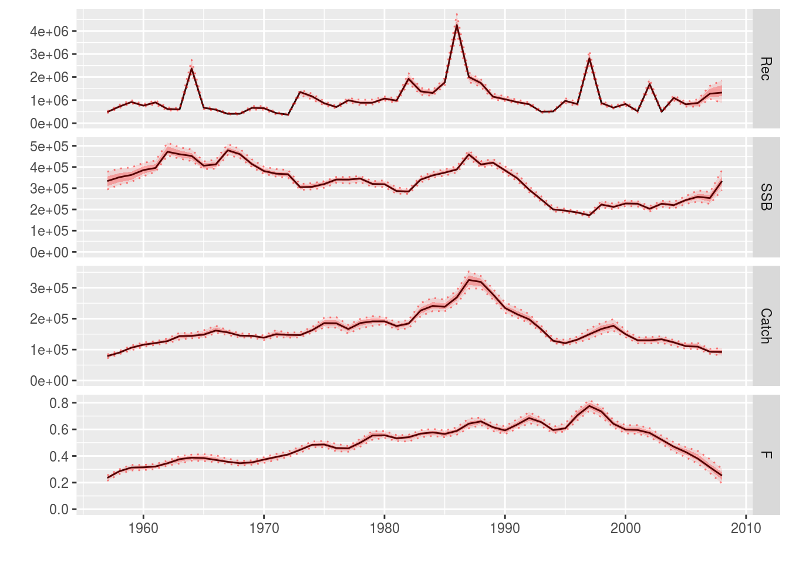
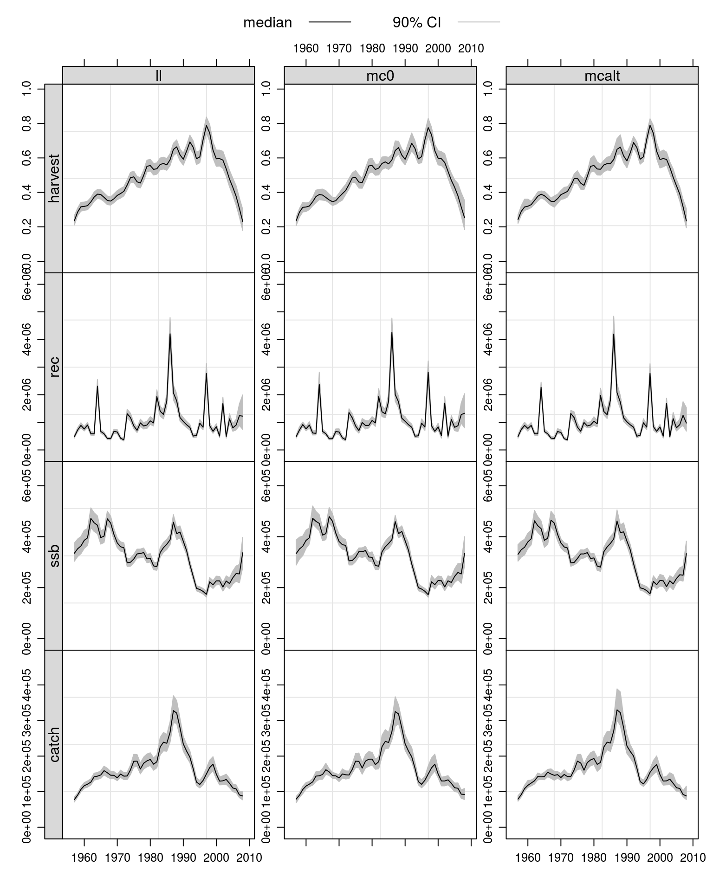

The a4a Stock Assessment Modelling Framework
Assessment for All initiative(a4a)
08 March, 2017
This document presents the statistical catch-at-age stock assessment model developed in the JRC Assessment For All (a4a) initiative. The stock assessment model framework is a non-linear catch-at-age model implemented in R (http://www.r-project.org/) / FLR (http://www.flr-project.org/) / ADMB (http://www.admb-project.org/) that can be applied rapidly to a wide range of situations with low parametrization requirements. The model structure is defined by submodels, which are the different parts that require structural assumptions. There are 5 submodels in operation: a model for F-at-age, a model for the initial age structure, a model for recruitment, a (list) of model(s) for abundance indices catchability-at-age, and a list of models for the observation variance of catch-at-age and abundance indices. The submodels form use linear models. This opens the possibility of using the linear modelling tools available in R: see for example the mgcv (http://cran.r-project.org/web/packages/mgcv/index.html) gam formulas, or factorial design formulas using. Detailed model formulas, several diagnostic tools and a large set of models are presented in the document. Additionaly, advanced features like external weighting of the likelihood components and MCMC fits are also described. The target audience for this document are readers with some experience in R and some background on stock assessment. The document explains the approach being developed by a4a for fish stock assessment and scientific advice. It presents a mixture of text and code, where the first explains the concepts behind the methods, while the last shows how these can be run with the software provided.
Required packages
Required packages
To follow this tutorial you should have installed the following packages:
You can do so as follows,
install.packages(c("copula","triangle", "coda", "XML", "reshape2", "latticeExtra"))
# from FLR
install.packages(c("FLCore", "FLa4a"), repos="http://flr-project.org/R")# This chunk loads all necessary packages, trims pkg messages
library(FLa4a)
library(latticeExtra)
# datasets
data(ple4)
data(ple4.indices)
data(ple4.index)Background
The stock assessment model framework is a non-linear catch-at-age model implemented in R/FLR/ADMB that can be applied rapidly to a wide range of situations with low parametrization requirements.
In the a4a assessment model, the model structure is defined by submodels, which are the different parts of a statistical catch at age model that require structural assumptions.
There are 5 submodels in operation: - a model for F-at-age, - a (list) of model(s) for abundance indices catchability-at-age, - a model for recruitment, - a list of models for the observation variance of catch-at-age and abundance indices, - a model for the initial age structure,
In practice, we fix the variance models and the initial age structure models, but in theory these can be changed.
The submodels form use linear models. This opens the possibility of using the linear modelling tools available in R: see for example the mgcv gam formulas, or factorial design formulas using lm(). In R’s linear modelling language, a constant model is coded as \(\sim 1\), while a slope over age would simply be \(\sim age\). For example, we can write a traditional year/age separable F model like \(\sim factor(age) + factor(year)\).
The ‘language’ of linear models has been developing within the statistical community for many years, and constitutes an elegant way of defining models without going through the complexity of mathematical representations. This approach makes it also easier to communicate among scientists:
- 1965 J. A. Nelder, notation for randomized block design
- 1973 Wilkinson and Rodgers, symbolic description for factorial designs
- 1990 Hastie and Tibshirani, introduced notation for smoothers
- 1991 Chambers and Hastie, further developed for use in S
There are two basic types of assessments available in a4a: the management procedure fit and the full assessment fit. The management procedure fit does not compute estimates of covariances and is therefore quicker to execute, while the full assessment fit returns parameter estimates and their covariances at the expense of longer fitting time.
Stock assessment model details
Modelled catches \(C\) are defined in terms of the three quantities, natural mortality \(M\), fishing mortality \(F\) and recruitment \(R\), using a modified form of the well known Baranov catch equation:
\[ C_{ay} = \frac{\bf{F}_{ay}}{\bf{F}_{ay}+M_{ay}}\left(1 - e^{-(\bf{F}_{ay}+M_{ay})}\right) \bf{R}_{y}e^{-\sum (\bf{F}_{ay} + M_{ay})} \]
where \(a\) and \(y\) denote age and year. Modelled survey indices \(I\) are defined in terms of the same three quantities with the addition of survey catchability \(Q\):
\[I_{ays} = \bf{Q}_{ays} \bf{R}_{y}e^{-\sum (\bf{F}_{ay} + M_{ay})}\]
where \(s\) denotes survey or abundance index and allows for multiple surveys to be considered. Observed catches \(C^{(obs)}\) and the observed survey indices \(I^{(obs)}\) are assumed to be log-normally distributed, or equivalently, normally distributed on the log-scale, with age, year and survey specific observation variance:
\[ \log C^{(obs)}_{ay} \sim \text{Normal} \Big( \log C_{ay}, \bf{\sigma}^2_{ay}\Big) \qquad \log I^{(obs)}_{ays} \sim \text{Normal} \Big( \log I_{ays}, \bf{\tau}^2_{ays} \Big) \]
The full log-likelihood for the a4a statistical catch at age model can now be defined as the sum of the log-likelihood of the observed catches (\(\ell_N\) is the log-likelihood of a normal distribution)
\[ \ell_C = \sum_{ay} w^{(c)}_{ay}\ \ell_N \Big( \log C_{ay}, \bf{\sigma}^2_{ay} ;\ \log C^{(obs)}_{ay} \Big) \]
and the log-likelihood of the observed survey indices
\[ \ell_I = \sum_s \sum_{ay} w^{(s)}_{ays}\ \ell_N \Big( \log I_{ays}, \bf{\tau}_{ays}^2 ;\ \log I^{(obs)}_{ays} \Big)\]
giving the total log-likelihood
\[\ell = \ell_C + \ell_I\]
which is defined in terms of the strictly positive quantites, \(M_{ay}\), \(F_{ay}\), \(Q_{ays}\) and \(R_{y}\), and the observation variances \(\sigma_{ay}\) and \(\tau_{ays}\). As such, the log-likelihood is over-parameterised as there are many more parameters than observations. In order to reduce the number of parameters, \(M_{ay}\) is assumed known (as is common), and the remaining parameters are written in terms of a linear combination of covariates \(x_{ayk}\), e.g.
\[\log F_{ay} = \sum_k \beta_k x_{ayk}\]
where \(k\) is the number of parameters to be estimated and is sufficiently small. Using this tecnique the quantities \(\log F\), \(\log Q\), \(\log \sigma\) and \(\log \tau\) %\(\log \text{initial\,age\,structure}\) % this is not present in the above (in bold in the equations above) can be described by a reduced number of parameters. The following section has more discussion on the use of linear models in a4a.
Stock recruitment relationships
The a4a statistical catch at age model can addiionally allow for a functional relationship to be imposed that links predicted recruitment \(\tilde{R}\) based on spawning stock biomass and modelled recruitment \(R\), included as a fixed variance random effect. Options for the relationship are the hard coded models Ricker, Beverton Holt, smooth hockeystick or geometric mean. This is implemented by including a third component in the log-likelihood
\[\ell_{SR} = \sum_y \ell_N \Big( \log \tilde{R}_y(a, b), \phi_y^2 ;\ \log R_y \Big)\]
giving the total log-likelihood
\[\ell = \ell_C + \ell_I + \ell_{SR}\]
Using the (time varying) Ricker model as an example, predicted recruitment is
\[\tilde{R}_y(a_y,b_y) = a_y S_{y-1} e^{-b_y S_{y-1}}\]
where \(S\) is spawning stock biomass derived from the model parameters \(F\) and \(R\), and the fixed quantites \(M\) and mean weights by year and age. It is assumed that \(R\) is log-normally distributed, or equivalently, normally distributed on the log-scale about the (log) recruitment predicted by the SR model \(\tilde{R}\), with known variance \(\phi^2\), i.e.
\[\log R_y \sim \text{Normal} \Big( \log \tilde{R}_y, \phi_y^2 \Big)\]
which leads to the definition of \(\ell_{SR}\) given above. In all cases \(a\) and \(b\) are strictly positive, and with the quantities \(F\), \(R\), etc. linear models are used to parameterise \(\log a\) and/or \(\log b\), where relevant.
By default, recruitment \(R\) as apposed to the reruitment predicted from a stock recruitment model \(\tilde{R}\), is specified as a linear model with a parameter for each year, i.e.
\[\log R_y = \gamma_y\]
This is to allow modelled recruitment \(R_y\) to be shrunk towards the stock recruitment model. However, if it is considered appropriate that recruitment can be determined exactly by a relationship with covariates, it is possible, to instead define \(\log R\) in terms of a linear model in the same way as \(\log F\), \(\log Q\), \(\log \sigma\) and \(\log \tau\). %But this is pretty much the same as taking a geometric mean, with a model on log a, and making the variance very small.
Quick and dirty
Here we show a simple example of using the assessment model using plaice in the North Sea. The default settings of the stock assessment model work reasonably well. It’s an area of research that will improve with time. Note that because the survey index for plaice has missing values we get a warning saying that we assume these values are missing at random.
data(ple4)
data(ple4.indices)
fit <- sca(ple4, ple4.indices)To inspect the stock assessment summary constituted of trends of fishing mortality (harvest), spawning stock biomass (SSB), catch and recruits, the user may add the a4aFit object to the original FLStock object using the + method and plot the result (Figure 1).
stk <- ple4 + fit
plot(stk)Stock summary for Plaice in ICES area IV, recruits, SSB (Stock Spawning Biomass), catch (catch and landings) and harvest (fishing mortality or F).
In more detail, one can plot a 3D representation of fishing mortality (Figure 2),
wireframe(harvest(fit), zlab="F")3D contour plot of estimated fishing mortality at age and year
population abundance (Figure 3) is displaid as a 3D wireframe,
Population abundance by age and year
as well as catch-at-age (Figure 4).
Catches in number of individuals by age and year
Diagnostics
A set of plots to inspect the fit quality and assumptions are implemented. The most common is to look at standardized log-residuals to check for biased results or large variances. Note that the standardization should produce residuals with variance ~1, which means that most residual values should be between \(\sim -2\) and \(\sim 2\). These residuals also allow the user to check for deviances from the log-normal assumption.
The residuals() method will compute standardized residuals which can be plotted using a set of packed methods.
res <- residuals(fit, ple4, ple4.indices)Figure 5 shows a scatterplot of residuals by age and survey, with a smoother to guide (or mis-guide …) your visual analysis.
plot(res)Standardized residuals for abundance indices (SNS, BTS Tridens and BTS Isis) and for catch numbers (catch.n). Each panel is coded by age class, dots represent standardized residuals and lines a simple smoother.
The common bubble plot by year and age for each survey are shown in Figure 6. It shows the same information as Figure 5 but in a multivariate perspective.
bubbles(res)Bubbles plot of standardized residuals for abundance indices (SNS, BTS Tridens and BTS Isis) and for catch numbers (catch.n).
Figure 7 shows a quantile-quantile plot to assess how well do the residuals match the normal distribution.
qqmath(res)Quantile-quantile plot of standardized residuals for abundance indices (SNS, BTS Tridens and BTS Isis) and for catch numbers (catch.n). Each panel is coded by age class, dots represent standardized residuals and lines the normal distribution quantiles.
To have a look at how well is the model predicting catches and abundance, one can use the plot() method with the a4aFit object and the FLStock (Figure 8) object or the FLIndex object.
plot(fit, ple4)Predict and observed catch-at-age
plot(fit, ple4.indices)Predict and observed abundance-at-age
Predict and observed abundance-at-age
Predict and observed abundance-at-age
%Finally a retrospective analysis can be carried out using the method `ra()}. Figure 10 shows the results for this assessment.
%{r, retro, fig.cap="Retrospective analysis"} %retro <- ra(ple4, ple4.indices, 5) %plot(retro) %
To get information about the likelihood fit the method fitSumm() will extract information about likelihood, number of parameters, etc, and the methods AIC() and BIC() will compute the information criteria.
fitSumm(fit)| 1 | |
|---|---|
| nopar | 187.0000 |
| nlogl | 105.4440 |
| maxgrad | 0.0000 |
| nobs | 901.0000 |
| gcv | 0.0499 |
| convergence | NA |
| accrate | NA |
AIC(fit)[1] 584.9BIC(fit)[1] 1483The statistical catch-at-age stock assessment framework - the sca method
The statistical catch at age (sca()) method used in the previous section with the default settings, can be parametrized to control other features of the stock assessment framework. The most interesting ones are the submodels for fishing mortality (\(F\)), catchability (\(Q\)) and recruitment (\(R\)).
An important argument for sca() is the type of fit, which controls if a full assessment will be performed or a management procedure type of assessment. The argument is called fit and can have the values ‘assessment’ for a full assessemt or ‘MP’ for a simpler assessment. By default sca() uses fit='MP'.
We’ll start by looking at the submodel for \(F\), then \(Q\) and finally \(R\).
Please note that each of these model forms have not been tuned to the data. The degrees of freedom of each model can be better tuned to the data by using model selection procedures such as Akaike Information Criterion (AIC) or Bayesian Information Criterion (BIC), etc.
Fishing mortality submodel
We will now take a look at some examples for F models and the forms that we can get. We’ll fix the \(Q\) and \(R\) submodels.
Lets start with a separable model in which age and year effects are modelled as dummy variables, using the factor coding provided by R (Figure 11). We’ll use only one index to save running time, with the code ple4.indices[1]. This code creates an FLIndices object which has the first element of our list of indices. Note the difference with ple4.indices[[1]] that would extract the first element of the list, an FLIndex object.
qmod <- list(~ factor(age))
fmod <- ~ factor(age) + factor(year)
srmod <- ~ factor(year)
fit <- sca(stock = ple4, indices = ple4.indices[1], fmodel=fmod, qmodel=qmod, srmodel=srmod)Fishing mortality separable model
Next we may make things a bit more interesting by using an (unpenalised) thin plate spline, where we’ll borrow the smoothing splines method (s()) provided by package mgcv. We’re using the North Sea Plaice data again, and since it has 10 ages we will use a simple rule of thumb that the spline should have fewer than \(\frac{10}{2} = 5\) degrees of freedom, and so we opt for 4 degrees of freedom. We will also do the same for year and model the change in F through time as a smoother with 20 degrees of freedom. Note that this is still a separable model, it’s a smoothed version of the previous model (Figure 12).
fmod <- ~ s(age, k=4) + s(year, k = 20)
# notice that you can specify the submodels without the argument, as an example you
# don't need fmodel=fmod, but the order should be respected...
fit <- sca(ple4, ple4.indices[1], fmod, qmod, srmod)
Fishing mortality smoothed separable model
A non-separable model, where we consider age and year to interact can be modeled using a smooth interaction term in the F model using a tensor product of cubic splines with the `te} method (Figure 13), again borrowed from mgcv.
fmod <- ~ te(age, year, k = c(4,20))
fit <- sca(ple4, ple4.indices[1], fmod, qmod, srmod)Fishing mortality smoothed non-separable model
In the last examples the fishing mortalities (Fs’) are linked across age and time. What if we want to free up a specific age class because in the residuals we see a consistent pattern. This can happen, for example, if the spatial distribution of juveniles is disconnected to the distribution of adults. The fishery focuses on the adult fish, and therefore the the F on young fish is a function of the distribution of the juveniles and could deserve a specific model. This can be achieved by adding a component for the year effect on age 1 (Figure 14).
fmod <- ~ te(age, year, k = c(4,20)) + s(year, k = 5, by = as.numeric(age==1))
fit <- sca(ple4, ple4.indices[1], fmod, qmod, srmod)Fishing mortality age-year interaction model with extra age 1 smoother.
Catchability submodel
The catchability submodel is set up the same way as the \(F\) submodel and the tools available are the same. The only difference is that the submodel is set up as a list of formulas, where each formula relates with one abundance index.
We’ll start by fixing the \(F\) and \(R\) models and compute the fraction of the year the index relates to, which will allow us to compute catchability at age and year.
fmod <- ~ factor(age) + factor(year)
srmod <- ~ factor(year)A first model is simply a dummy effect on age, which means that a coefficient will be estimated for each age. Note that this kind of model considers that levels of the factor are independent (Figure 15).
qmod <- list(~ factor(age))
fit <- sca(ple4, ple4.indices[1], fmod, qmod, srmod)To compute the catchability estimated for each index we’ll need to compute the abundance at the moment the index was carried out and divide the predicted index by the abundance. More precisely we’ll compute abundance in the mid of the index period, which is stored in the FLIndex object, in the slot range, in fractions of the year. Later we’ll see that we can use the method predict() to get the same result, but we’ll need a a4aFitSA object to get the fitted parameters.
# compute N for the fraction of the year the survey is carried out
sfrac <- mean(range(ple4.indices[[1]])[c("startf", "endf")])
# fraction of total mortality up to that moment
Z <- (m(ple4) + harvest(fit))*sfrac
lst <- dimnames(fit@index[[1]])
# survivors
lst$x <- stock.n(fit)*exp(-Z)
stkn <- do.call("trim", lst)
qhat <- index(fit)[[1]]/stknCatchability age independent model
If one considers catchability at a specific age to be dependent on catchability on the other ages, similar to a selectivity modelling approach, one option is to use a smoother at age, and let the data ‘speak’ regarding the shape (Figure 16).
qmod <- list(~ s(age, k=4))
fit <- sca(ple4, ple4.indices[1], fmod, qmod, srmod)
# compute N for the fraction of the year the survey is carried out
Z <- (m(ple4) + harvest(fit))*sfrac
lst <- dimnames(fit@index[[1]])
lst$x <- stock.n(fit)*exp(-Z)
stkn <- do.call("trim", lst)
qhat <- index(fit)[[1]]/stknCatchability smoother age model
As in the case of \(F\), one may consider catchability to be a process that evolves with age and year, including an interaction between the two effects. Such model can be modelled using the tensor product of cubic splines, the same way we did for the \(F\) model (Figure 17).
qmod <- list(~ te(age, year, k = c(3,40)))
fit <- sca(ple4, ple4.indices[1], fmod, qmod, srmod)
# compute N for the fraction of the year the survey is carried out
Z <- (m(ple4) + harvest(fit))*sfrac
lst <- dimnames(fit@index[[1]])
lst$x <- stock.n(fit)*exp(-Z)
stkn <- do.call("trim", lst)
qhat <- index(fit)[[1]]/stknCatchability tensor product of age and year
Finally, one may want to investigate a trend in catchability with time, very common in indices built from CPUE data. In the example given here we’ll use a linear trend in time, set up by a simple linear model (Figure 18).
qmod <- list( ~ s(age, k=4) + year)
fit <- sca(ple4, ple4.indices[1], fmod, qmod, srmod)
# compute N for the fraction of the year the survey is carried out
Z <- (m(ple4) + harvest(fit))*sfrac
lst <- dimnames(fit@index[[1]])
lst$x <- stock.n(fit)*exp(-Z)
stkn <- do.call("trim", lst)
qhat <- index(fit)[[1]]/stknCatchability with a linear trend in year
Catchability submodel for age aggregated indices
The previous section was focused on age disaggregated indices, but age aggregated indices (CPUE, biomass, DEPM, etc) may also be used to tune the total biomass of the population. In these cases a slightly different class for the index must be used, the FLIndexBiomass, which uses a vector index with the age dimension called “all”. Note that in this case the qmodel should be set without age factors, although it can have a “year” component and covariates if needed. An interesting feature with biomass indices is the age range they refer to can be specified.
# simulating a biomass index (note the name of the first dimension element) using
# the ple4 biomass and an arbritary catchability of 0.001 plus a lognormal error.
dnms <- list(age="all", year=range(ple4)["minyear"]:range(ple4)["maxyear"])
bioidx <- FLIndexBiomass(FLQuant(NA, dimnames=dnms))
index(bioidx) <- stock(ple4)*0.001
index(bioidx) <- index(bioidx)*exp(rnorm(index(bioidx), sd=0.1))
range(bioidx)[c("startf","endf")] <- c(0,0)
# note the name of the first dimension element
index(bioidx)An object of class "FLQuant"
, , unit = unique, season = all, area = unique
year
age 1957 1958 1959 1960 1961
all 314.27 376.33 339.07 458.49 423.67
[ ... 42 years]
year
age 2004 2005 2006 2007 2008
all 309.57 254.20 277.95 248.41 304.06# fitting the model
fit <- sca(ple4, FLIndices(bioidx), qmodel=list(~1))The same methods that are applied to age disaggregated indices apply here, see standardized log residuals in Figure 19. It’s also possible to mix several indices of both types.
Catchability residuals for a biomass index
An example where the biomass index refers only to age 2 to 4 (for example a CPUE that targets these particular ages).
# creating the index
dnms <- list(age="all", year=range(ple4)["minyear"]:range(ple4)["maxyear"])
bioidx <- FLIndexBiomass(FLQuant(NA, dimnames=dnms))
# but now use only ages 2:4
index(bioidx) <- tsb(ple4[ac(2:4)])*0.001
index(bioidx) <- index(bioidx)*exp(rnorm(index(bioidx), sd=0.1))
range(bioidx)[c("startf","endf")] <- c(0,0)
# to pass this information to the model one needs to specify an age range
range(bioidx)[c("min","max")] <- c(2,4)
# fitting the model
fit <- sca(ple4, FLIndices(bioidx), qmodel=list(~1))And once more residual plots as dignostics (Figure 20).
Catchability residuals for a biomass index
Catchability submodel for single age indices
Similar to age aggregated indices one may have an index that relates only to one age, like a recruitment index. In this case the FLIndex object must have in the first dimension the age it referes to. The fit is then done relating the index with the proper age in numbers. Note that in this case the qmodel should be set without age factors, although it can have a “year” component and covariates if needed.
fit <- sca(ple4, FLIndices(ple4.index[1]), qmodel=list(~1))As previously, the same methods apply, see standardized log residuals in Figure 21.
Catchability residuals for a single age index
Stock-recruitment submodel
The S/R submodel is a special case, in the sense that it can be set up with the same linear tools as the \(F\) and \(Q\) models, but it can also use some hard coded models. The example shows how to set up a simple dummy model with factor(), a smooth model with s(), a Ricker model (ricker()), a Beverton and Holt model (bevholt()), a hockey stick model (hockey()), and a geometric mean model (geomean()). See Figure 22 for results. As mentioned before, the ‘structural’ models have a fixed variance, which must be set by defining the coefficient of variation. We now fix the \(F\) and \(Q\) submodels before fiddling around with the S/R model.
fmod <- ~ s(age, k=4) + s(year, k = 20)
qmod <- list(~ s(age, k=4))srmod <- ~ factor(year)
fit <- sca(ple4, ple4.indices[1], fmod, qmod, srmod)
srmod <- ~ s(year, k=20)
fit1 <- sca(ple4, ple4.indices[1], fmod, qmod, srmod)
srmod <- ~ ricker(CV=0.1)
fit2 <- sca(ple4, ple4.indices[1], fmod, qmod, srmod)
srmod <- ~ bevholt(CV=0.1)
fit3 <- sca(ple4, ple4.indices[1], fmod, qmod, srmod)
srmod <- ~ hockey(CV=0.2)
fit4 <- sca(ple4, ple4.indices[1], fmod, qmod, srmod)
srmod <- ~ geomean(CV=0.1)
fit5 <- sca(ple4, ple4.indices[1], fmod, qmod, srmod)Stock-recruitment models fits
The major effects - age, year and cohort
All submodels use the same type of specification process, the R formula interface, wich gives lot’s of flexibility to explore models and combination of sub-models. As a reference one can consider three major effects that can be modelled the same way, the age affect, year effect and cohort effect. As examples note the following models, in these cases applied to fishing mortality, and all of them as a factor, which means one coefficient will be estimated for each level of the factor, meaning age, year or cohort respectively.
# the age effect
ageeffect <- ~ factor(age)
# the year effect
yeareffect <- ~ factor(year)
# the cohort
cohorteffect <- ~ factor(year-age)
# the fits
fit1 <- sca(ple4, ple4.indices, fmodel=yeareffect)
fit2 <- sca(ple4, ple4.indices, fmodel=ageeffect)
fit3 <- sca(ple4, ple4.indices, fmodel=cohorteffect)and the graphical representation of the three models in Figures~ to .
Major effects: the year effect (~ factor(year))
Major effects: the age effect (~ factor(age))

Major effects: the cohort effect (~ factor(year-age))
The statistical catch-at-age stock assessment framework advanced features - the a4aSCA method
A more advanced method for stock assessment can be used through the a4aSCA() method. This method gives access to the submodels for \(N1\), \(\sigma^2_{ay}\) and \(I_{ays}\) as well as arguments to get the ADMB files, etc. Check the manual pages with ?a4aSCA for more information. This method has ‘assessment’ as the default value for the `fit} argument, which means that the hessian is going to be computed and all the information about the parameters will be returned by default. Note that the default models of each submodel can be accessed with
fit <- a4aSCA(ple4, ple4.indices[1])
submodels(fit) fmodel: ~te(age, year, k = c(4, 26), bs = "tp") + s(age, k = 8)
srmodel: ~factor(year)
n1model: ~factor(age)
qmodel:
BTS-Isis: ~s(age, k = 5)
vmodel:
catch: ~s(age, k = 3)
BTS-Isis: ~1N1 model
The submodel for the stock number at age in the first year of the time series is set up with the usual linear tools (Figure 26), but bare in mind that the year effect does not make sense here.
n1mod <- ~s(age, k=4)
fit1 <- a4aSCA(ple4, ple4.indices[1], n1model=n1mod)
flqs <- FLQuants(smother=stock.n(fit1)[,1], factor=stock.n(fit)[,1])Nay=1 models
Variance model
The variance model allows the user to set up the shape of the observation variances \(\sigma^2_{ay}\) and \(I_{ays}\). This is an important subject related with fisheries data used for input to stock assessment models. It’s quite common to have more precision on the most represented ages and less precision on the less frequent ages. This is due to the fact that the last ages do not appear as often at the auction markets, in the fishing operations or on survey samples.
By default the model assumes constant variance over time and ages (~ 1 model) but it can use other models specified by the user. As with the other submodels, R linear model capabilities are used (Figure 27).
vmod <- list(~1, ~1)
fit1 <- a4aSCA(ple4, ple4.indices[1], vmodel=vmod)
vmod <- list(~ s(age, k=4), ~1)
fit2 <- a4aSCA(ple4, ple4.indices[1], vmodel=vmod)
flqs <- FLQuants(cts=catch.n(fit1), smo=catch.n(fit2))Population estimates using two different variance models
Working with covariates
In linear model one can use covariates to explain part of the variance observed on the data that the ‘core’ model does not explain. The same can be done in the a4a framework. The example below uses the North Atlantic Oscillation (NAO) index to model recruitment.
nao <- read.table("https://www.esrl.noaa.gov/psd/data/correlation/nao.data", skip=1,
nrow=62, na.strings="-99.90")
dnms <- list(quant="nao", year=1948:2009, unit="unique", season=1:12, area="unique")
nao <- FLQuant(unlist(nao[,-1]), dimnames=dnms, units="nao")
nao <- seasonMeans(trim(nao, year=dimnames(stock.n(ple4))$year))
nao <- as.numeric(nao)First by simply assuming that the NAO index drives recruitment (Figure 28).
srmod <- ~ nao
fit2 <- sca(ple4, ple4.indices[1], qmodel=list(~s(age, k=4)), srmodel=srmod)
flqs <- FLQuants(simple=stock.n(fit)[1], covar=stock.n(fit2)[1])Recruitment model with covariates. Using the NAO index as a recruitment index.
In a second model we’re using the NAO index not to model recruitment directly but to model one of the parameters of the S/R function (Figure 29).
srmod <- ~ ricker(a=~nao, CV=0.1)
fit3 <- sca(ple4, ple4.indices[1], qmodel=list(~s(age, k=4)), srmodel=srmod)
flqs <- FLQuants(simple=stock.n(fit)[1], covar=stock.n(fit3)[1])Recruitment model with covariates. Using the NAO index as a covariate for the stock-recruitment model parameters.
Note that covariates can be added to any submodel using the linear model capabilities of R.
Assessing ADMB files
The framework gives access to the files produced to run the ADMB fitting routine through the argument wkdir. When set up all the ADMB files will be left in the directory. Note that the ADMB tpl file is distributed with the FLa4a. One can get it from your R library, under the folder myRlib/FLa4a/admb/.
fit1 <- a4aSCA(ple4, ple4.indices, wkdir="fit1run")Predict and simulate
To predict and simulate R uses the methods predict() and simulate(), which were implemented in FLa4a in the same fashion.
fit <- sca(ple4, ple4.indices[1], fit="assessment")Predict
Predict simply computes the quantities of interest using the estimated coefficients and the design matrix of the model.
fit.pred <- predict(fit)
lapply(fit.pred, names)$stkmodel
[1] "harvest" "rec" "ny1"
$qmodel
[1] "BTS-Isis"
$vmodel
[1] "catch" "BTS-Isis"Simulate
Simulate uses the variance-covariance matrix computed from the Hessian returned by ADMB and the fitted parameters, to parametrize a multivariate normal distribution. The simulations are carried out using the method mvrnorm() provided by the R package MASS. Figure 30 shows a comparison between the estimated values and the medians of the simulation, while Figure 31 presents the stock summary of the simulated and fitted data.
fits <- simulate(fit, 100)
flqs <- FLQuants(sim=iterMedians(stock.n(fits)), det=stock.n(fit))Median simulations VS fit
Stock summary of the simulated and fitted data
The statistical catch-at-age stock assessment framework with MCMC
The previous methods were demonstrated using the maximum likelihood estimation method. However, ADMB can also use MCMC methods to fit the model. This section shows how the sca and a4aSCA methods interface with ADMB to use the MCMC fits.
The likelihood estimate is
# ll
fit <- a4aSCA(ple4, ple4.indices)
fit <- simulate(fit, 1000)To run the MCMC estimate, one needs to configure a set of arguments, which is done by creating a SCAMCMC object. For details on the MCMC configuration in ADMB visit the ADMB website.
# mcmc
mc <- SCAMCMC()
# check the default pars
mcAn object of class "SCAMCMC"
Slot "mcmc":
[1] 10000
Slot "mcsave":
[1] 100
Slot "mcscale":
[1] NaN
Slot "mcmult":
[1] NaN
Slot "mcrb":
[1] NaN
Slot "mcprobe":
[1] NaN
Slot "mcseed":
[1] NaN
Slot "mcdiag":
[1] FALSE
Slot "mcnoscale":
[1] FALSE
Slot "mcu":
[1] FALSE
Slot "hybrid":
[1] FALSE
Slot "hynstep":
[1] NaN
Slot "hyeps":
[1] NaNDefaults for now are ok, so lets fit the model. Note that the argument fit ius set to MCMC and the argument mcmc takes the SCAMCMC object. A major check when running MCMC is the acceptance rate, which should be around 0.3. This is a rule of thumb, for more information read the (extensive) literature on MCMC. The slot fitSumm stores that information.
# fit the model
fitmc1 <- a4aSCA(ple4, ple4.indices, fit="MCMC", mcmc=mc)
# check acceptance rate
fitSumm(fitmc1)| 1 | |
|---|---|
| nopar | 187.0000 |
| nlogl | NA |
| maxgrad | NA |
| nobs | 901.0000 |
| gcv | NA |
| convergence | NA |
| accrate | 0.3088 |
We use the package CODA to run the diagnostics on MCMC fits. First one can plot chains using coda. Note the mcmc object is a matrix with the parameters (row = iters, cols= pars).
fitmc1.mc <- as.mcmc(fitmc1)
plot(fitmc1.mc)The usual summary plot,

As mentioned above ADMB has several options for MCMC. Here we demonstrate one of them, mcprobe which sets a fat-tailed proposal distribution, as an example of how to use the SCAMCMC objects.
mc <- SCAMCMC(mcmc=10000, mcsave=200, mcprobe=0.4)
fitmc2 <- a4aSCA(ple4, ple4.indices, qmodel=list(~s(age, k=3), ~s(age, k=3),~s(age, k=3)), fit="MCMC", mcmc=mc)All fits together

Geeky stuff
A lot more can be done with the a4a framework. The next sections will describe methods that are more technical. What we’d categorize as ‘matters for geeks’, in the sense that these methods usually will require the users to ‘dive’ into R a bit more.
fit <- sca(ple4, ple4.indices[1], fit="assessment")External weigthing of likelihood components
By default the likelihood components are weighted using inverse variance. However, the user may change the weights by setting the variance of the input parameters. This is done by adding a variance matrix to the catch.n and index.n slots of the stock and index objects. These variances will be used to penalize the data during the likelihood computation. The values should be given as coefficients of variation on the log scale, so that variance is \(\log{({CV}^2 + 1)}\). Figure 32 shows the results of two fits with distinct likelihood weightings.
stk <- ple4
idx <- ple4.indices[1]
# variance of observed catches
varslt <- catch.n(stk)
varslt[] <- 0.4
catch.n(stk) <- FLQuantDistr(catch.n(stk), varslt)
# variance of observed indices
varslt <- index(idx[[1]])
varslt[] <- 0.1
index.var(idx[[1]]) <- varslt
# run
fit1 <- a4aSCA(stk, idx)
flqs <- FLQuants(nowgt=stock.n(fit), extwgt=stock.n(fit1))Stock summary of distinct likelihood weightings
More models
There’s a set of methods that allow the user to have more flexibility on applying the models referred before. For example to break the time series in two periods, using the method breakpts(), or fixing some parts of the selection pattern by setting F to be the same for a group of ages, using replace().
The example below (Figure 33) replaces all ages above 5 by age 5, which means that a single coefficient is going to be estimated for age 5-10.
fmod <- ~ s(replace(age, age>5, 5), k=4) + s(year, k=20)
fit <- sca(ple4, ple4.indices, fmod)F-at-age fixed above age 5
Or else one can use a closed form fort the selection pattern. The example below uses a logistic form (Figure 34).
fmod <- ~ I(1/(1+exp(-age)))
fit <- sca(ple4, ple4.indices, fmod)F-at-age logistic
In the next case we’ll use the breakpts() to split the time series at 1990, although keeping the same shape in both periods, a thin plate spline with 3 knots (Figure 35).
fmod <- ~s(age, k = 3, by = breakpts(year, 1990))
fit <- sca(ple4, ple4.indices, fmod)F-at-age in two periods using in both cases a thin plate spline with 3 knots
More complicated models can be built with these tools. For example, Figure 36 shows a model where the age effect is modelled as a smoother (the same thin plate spline) throughout years but independent from each other.
fmod <- ~ factor(age) + s(year, k=10, by = breakpts(age, c(2:8)))
fit <- sca(ple4, ple4.indices, fmod)F-at-age as thin plate spline with 3 knots for each age
A quite complex model that implements a cohort effect can be set through the following formula. Figure 37 shows the resulting fishing mortality. Note that in this case we end up with a variable F pattern over time, but rather than using 4 * 10 = 40 parameters, it uses, 4 + 10 + 10 = 24.
fmodel <- ~ s(age, k = 4) + s(pmax(year - age, 1957), k = 10) + s(year, k = 10)
fit <- sca(ple4, ple4.indices, fmodel=fmodel)F-at-age with a cohort effect.
Propagate natural mortality uncertainty
In this section we give an example of how uncertainty in natural mortality, set up using the m() method and the class a4aM (see vignette("M")), is propagated through the stock assessment. We’ll start by fitting the default model to the data.
data(ple4)
data(ple4.indices)
fit <- sca(ple4, ple4.indices)Using the a4a methods we’ll model natural mortality using a negative exponential model by age, Jensen’s estimator for the level and a constant trend with time. We include multivariate normal uncertainty using the mvrnorm() method and create 25 iterations.
nits <- 25
shape <- FLModelSim(model=~exp(-age-0.5))
level <- FLModelSim(model=~k^0.66*t^0.57, params = FLPar(k=0.4, t=10),
vcov=matrix(c(0.002, 0.01,0.01, 1), ncol=2))
trend <- FLModelSim(model=~b, params=FLPar(b=0.5), vcov=matrix(0.02))
m4 <- a4aM(shape=shape, level=level, trend=trend)
m4 <- mvrnorm(nits, m4)
range(m4)[] <- range(ple4)[]
range(m4)[c("minmbar","maxmbar")]<-c(1,1)
flq <- m(m4)[]
quant(flq) <- "age"
stk <- propagate(ple4, nits)
m(stk) <- flqWe fit the same model to the new stock object which has uncertainty in the natural mortality. The assessment is performed for each of the 25 iterations.
fit1 <- sca(stk, ple4.indices)And compare the two results (Figure 38). It’s quite easy to run these kind of tests and a large part of our effort is to create the tools to do so.
Stock summary for two M models
WCSAM exercise - replicating itself
The World Conference on Stock Assessment Methods WCSAM promoted a workshop where a large simulation study was used to test the performance of distinct stock assessment models. The first criteria used was that the models should be able to reproduce itself. The process involved fitting the model, simulating observation error using the same model, and refitting the model to each iteration. The final results should be similar to the fitted results before observation error was added (see Deroba, et.al, 2014 for details). The following analysis runs this analysis and Figure 39 presents the results.
# number of iters
nits <- 25
# fit the model
fit <- a4aSCA(ple4, ple4.indices[1])
# update the stock data
stk <- ple4 + fit
# simulate controlling the random seed
fits <- simulate(fit, nits, 1234)
# update stock and index data, now with iters
stks <- ple4 + fits
idxs <- ple4.indices[1]
index(idxs[[1]]) <- index(fits)[[1]]
# run assessments on each iter
sfit <- a4aSCA(stks, idxs, fit="MP")
Replicating the stock assessment model (WCSAM approach)
Parallel computing
This is an example of how to use the parallel R package to run assessments. In this example each iteration is a dataset, including surveys, and we’ll run one assessment for each iteration. Afterwards the data is pulled back together in an FLStock object and plotted (Figure 40). Only 20 iterations are run to avoid taking too long. Also note that we’re using 4 cores. This parameter depends on the computer being used. These days almost all computers have at least 2 cores.
Finally, compare this code with the one for replicating WCSAM and note that it’s exactly the same, except that we’re using mclapply() from package paralell instead of lapply().
data(ple4)
data(ple4.indices)
nits <- 25
fit <- a4aSCA(ple4, ple4.indices[1])
stk <- ple4 + fit
fits <- simulate(fit, nits, 1234)
stks <- ple4 + fits
idxs <- ple4.indices[1]
index(idxs[[1]]) <- index(fits)[[1]]
library(parallel)
lst <- mclapply(split(1:nits, 1:nits), function(x){
out <- try(a4aSCA(iter(stks, x), FLIndices(iter(idxs[[1]], x)), fit="MP"))
if(is(out, "try-error")) NULL else out
})
stks2 <- stks
for(i in 1:nits){
iter(catch.n(stks2), i) <- catch.n(lst[[i]])
iter(stock.n(stks2), i) <- stock.n(lst[[i]])
iter(harvest(stks2), i) <- harvest(lst[[i]])
}
catch(stks2) <- computeCatch(stks2)
stock(stks2) <- computeStock(stks2)
stks3 <- FLStocks(original=stk, simulation=stks, "fit over simulation"=stks2)Replicating the stock assessment model (WCSAM approach) using parallel computing
References
More information
Documentation can be found at (http://flr-project.org/FLa4a). You are welcome to:
- Submit suggestions and bug-reports at: (https://github.com/flr/FLa4a/issues)
- Send a pull request on: (https://github.com/flr/FLa4a/)
- Compose a friendly e-mail to the maintainer, see
packageDescription('FLa4a')
Software Versions
- R version 3.3.2 (2016-10-31)
- FLCore: 2.6.0.20170228
- FLa4a: 1.0.0
- Compiled: Wed Mar 8 09:55:50 2017
License
This document is licensed under the Creative Commons Attribution-ShareAlike 4.0 International license.